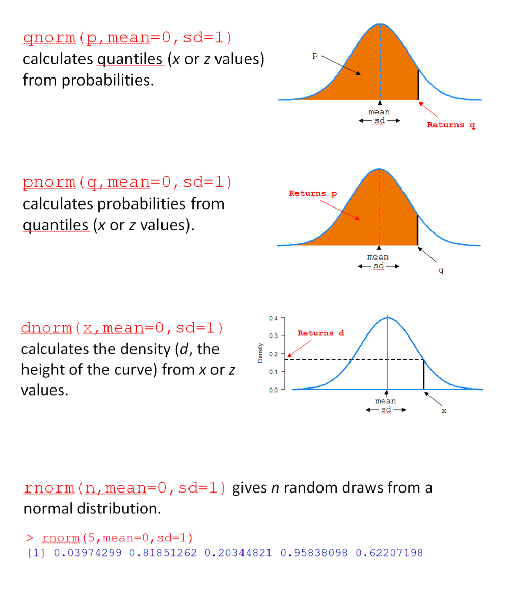
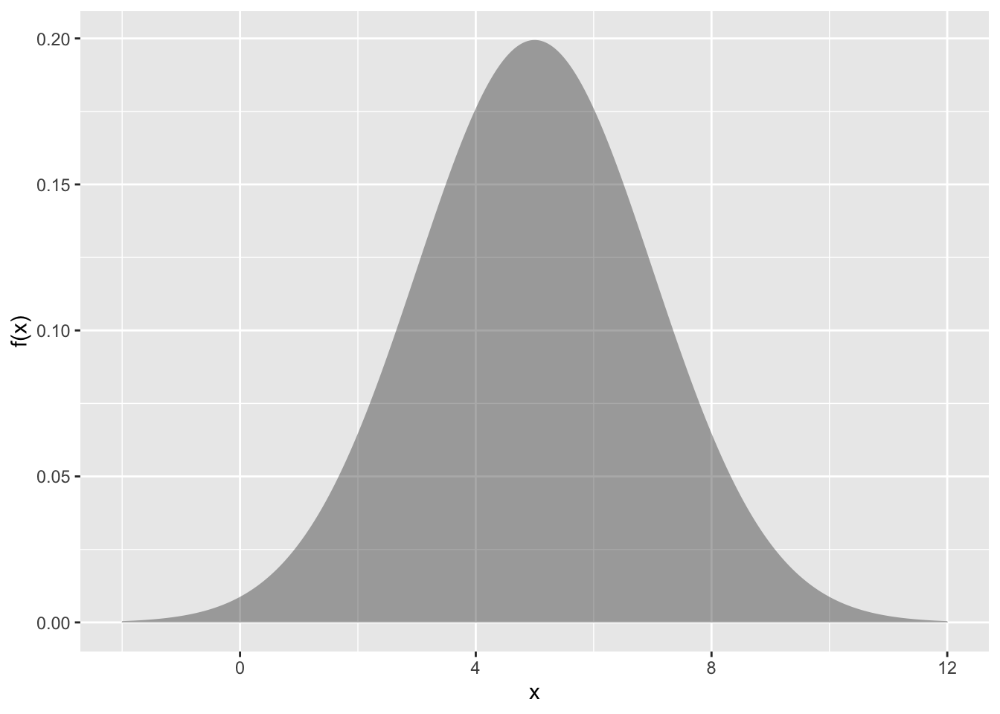
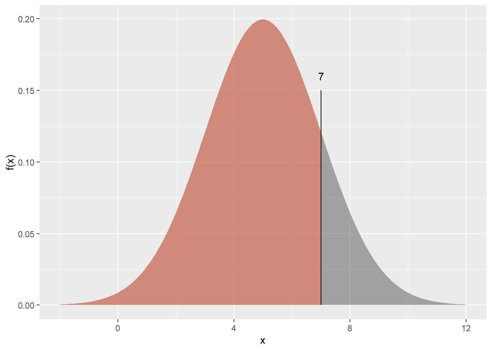
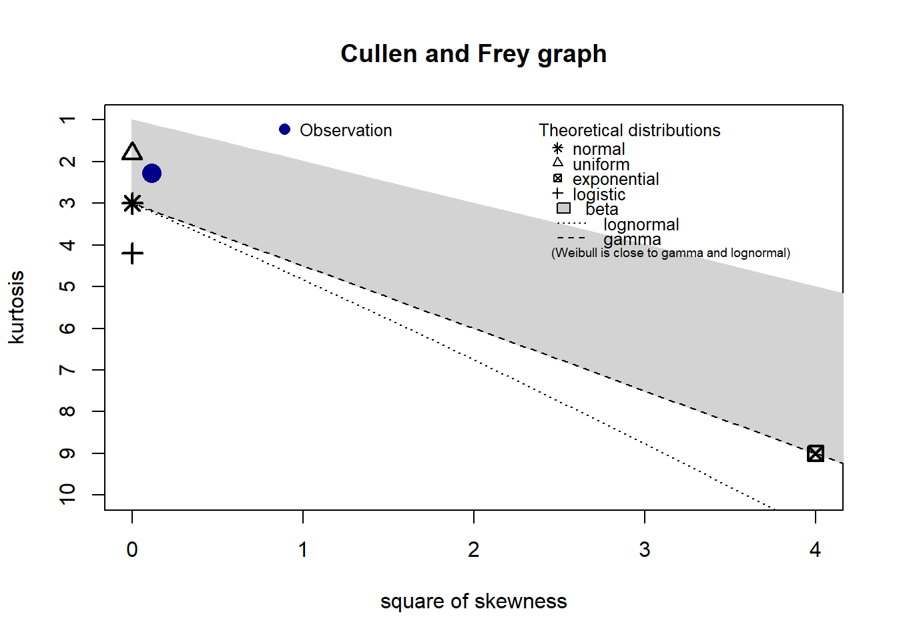
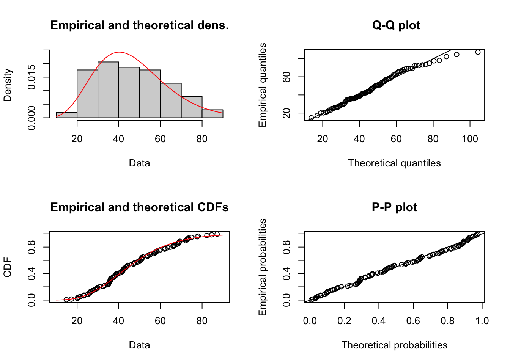
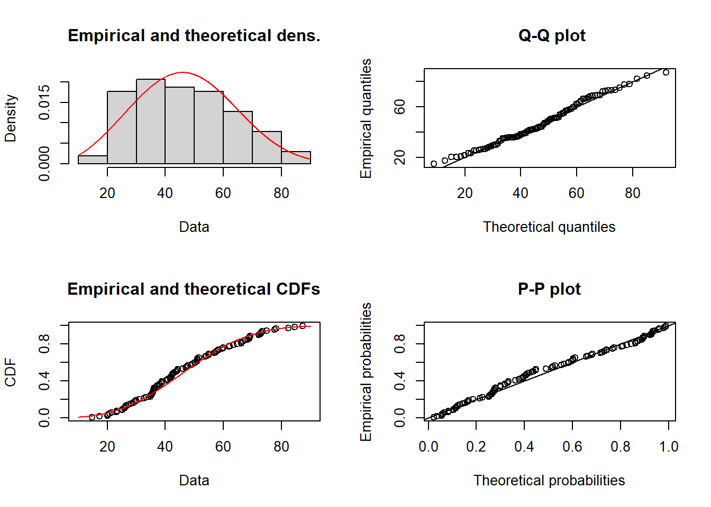
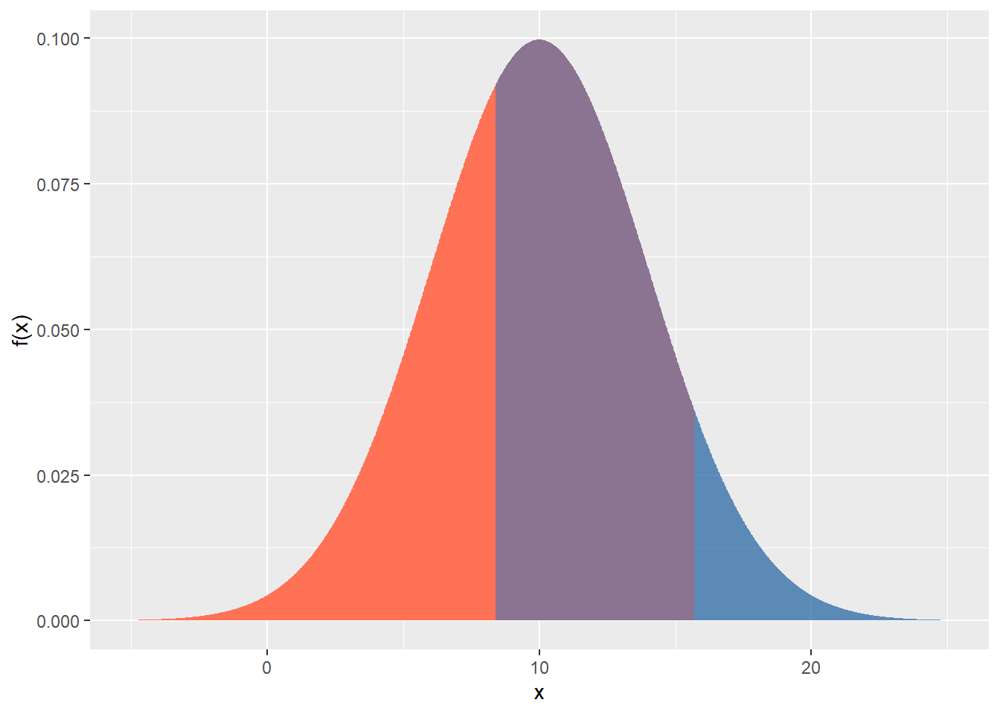

Code
library(tidyverse)library(tidyverse)R can be used to calculate the probabilities of any range of numbers occurring from a normal distribution. The probability of drawing a value between \(a\) and \(b\) is simply the area (i.e. intregral) underneath the density curve between the values \(a\) and \(b\). We can also use R to get quantile values (i.e., the value below which 90% of values lie), or generate random samples from a normal distribution.

For any distribution, there are four key R functions, beginning with q for ‘quantile’, p for ‘probability’, d for ‘density, and r for ’random’. In Figure 1, the four functions are for the normal distribution are shown (qnorm(), pnorm(), dnorm(), and rnorm()).
Let’s consider pnorm(). For this function, you provide a value of q, along with a mean (mean) and standard deviation (sd), and pnorm() returns the probability (area) of drawing a value below q; i.e., \(\text{P}(X < x)\).
For example, pnorm(q = 7, mean = 5, sd = 2) calculates the probability that a normal random variable (with mean 5 and standard deviation 2) has a value less than 7. In short, it answers the question “what is \(\text{P}(X < 7)\) when \(X \sim \text{N}(\mu=5, \sigma=2)\)?”
Here’s the distribution:
dfs <- tibble(
x=seq(-2, 12, length=500),
`f(x)` = dnorm(x, mean=5, sd=2)
)
ps <- ggplot(dfs) +
aes(x = x, y = `f(x)`) +
geom_area(alpha = 0.4)
ps
We’re asking for the coloured area in the plot below:
ps +
geom_area(
data = dfs |>
filter(x < 7),
fill="coral1",
alpha=.5
) +
geom_segment(
aes(x =7,
xend = 7,
y = 0,
yend = 0.15
)
) +
annotate(
"text",
x = 7,
y = 0.16,
label = "7"
) 
How do we get R to calculate this? Simple!
pnorm(q = 7, mean = 5, sd = 2)Let \(X\) be a normally distributed random variable with mean of 10 and standard deviation of 4.
Draw the normal distribution in each case, and shade the area of interest. Then, calculate the following values using R.
\(\text{P}(X < 7)\)
\(\text{P}(8.4 < X < 15.7)\)
\(\text{P}(X > 17)\)
Find \(x\) such that \(\text{P}(X < x) = 0.2\) (i.e. the 0.2 quantile). Hint: use the qnorm() function.
Answers are at the end of this document.
PrestigeWe will be using a well-known dataset called Prestige from the car R package. This dataset deals with prestige ratings of Canadian Occupations. The Prestige dataset has 102 rows and 6 columns. The observations are occupations.
This data frame contains the following columns:
education - Average education of occupational incumbents, years, in 1971.
income - Average income of incumbents, dollars, in 1971.
women - Percentage of incumbents who are women.
prestige - Pineo-Porter prestige score for occupation, from a social survey conducted in the mid-1960s.
census - Canadian Census occupational code.
type - Type of occupation. A factor with levels: bc, Blue Collar; prof, Professional, Managerial, and Technical; wc, White Collar. (includes four missing values).
For a standard normal variable \(z\) , obtain the area between -1.8 and 2.1.
pnorm(2.1, mean=0, sd=1) - pnorm(-1.8, mean=0, sd=1)Note that the mean=0, sd=1 are the defaults for pnorm function, so don’t need to be specified.
pnorm(2.1) - pnorm(-1.8)Plot the prestige scores data as a histogram and show the theoretical normal curve fitted to the data.
library(tidyverse)
library(car)
Prestige |>
ggplot() +
aes(prestige) +
geom_histogram(aes(y=after_stat(density)), bins=10) +
stat_function(
fun = dnorm,
args = list(mean = mean(Prestige$prestige),
sd = sd(Prestige$prestige) ),
geom = "line")Let’s try a square-root transformation
library(tidyverse)
library(car)
Prestige |>
ggplot() +
aes(sqrt(prestige)) +
geom_histogram(aes(y=after_stat(density)), bins=10) +
stat_function(
fun = dnorm,
args = list(mean = mean(sqrt(Prestige$prestige)),
sd = sd(sqrt(Prestige$prestige)) ),
geom = "line") +
ggtitle("Square-root prestige")Let’s look at the prestige scores variable to see how well it conforms with a normal distribution.
First, make a normal quantile plot.
Prestige |>
ggplot() +
aes(sample=prestige) +
stat_qq() +
stat_qq_line()The x-axis are theoretical quantiles of a normal distribution; the y-axis are the quantiles of the actual data.
If the data conformed perfectly to a normal distribution, the points would lie perfectly along the line.
The above plot shows that these data conform pretty well to the normal. There is very often some departure in the ‘tails’ at either end, like there is here. Here’s a plot of data that were actually simulated from a normal distribution for comparison:
set.seed(111)
data.frame(
x = rnorm(
n = nrow(Prestige),
mean = mean(Prestige$prestige),
sd = sd(Prestige$prestige)
)
) |>
ggplot() +
aes(sample = x) +
stat_qq() +
stat_qq_line()
Now, we’ll do some tests for whether prestige scores show a “significant” departure from the normal distribution.
The null hypothesis is that the data came from a normal distribution. A small p-value (say, < 0.05) would lead us to reject the null hypothesis and conclude that the data are unlikely to have come from a normal distribution. A large p-value (> 0.05) means we have no evidence of non-normality.
First, the Shapiro-Wilk test.
shapiro.test(Prestige$prestige)Here, the null hypothesis is rejected, so the data are unlikely to have come from a normal.
The Kolmogorov-Smirnov test can also be used. It differs from the Shapiro-Wilk in that you specify the mean and SD of the distribution (here using the sample mean and SD).
ks.test(Prestige$prestige,
"pnorm",
mean(Prestige$prestige),
sd(Prestige$prestige) )Here we have a discrepancy. S-W rejected the null hypothesis, and K-S did not. It is well-known that S-W is generally more powerful (i.e., more likely to reject a false null hypothesis).
At any rate, I don’t believe in “true” distributions. Would I feel comfortable using a normal here? Possibly. It all depends on the context. Remember, there are no true models, only useful ones.
We can try the square-root transformed prestige with .
shapiro.test(sqrt(Prestige$prestige))No significant departure from normality for the sqrt-transformed data.
\(X \sim \text{N}(10,4)\)
pnorm(q=7, mean=10, sd=4)dfs <- tibble(
x=seq(-5, 25, length=500),
`f(x)` = dnorm(x, mean=10, sd=4)
)
gp <- ggplot(dfs) +
aes(x = x, y = `f(x)`) +
geom_area(alpha = 0.4)
gp +
geom_area(
data = dfs |>
filter(x < 7),
fill="coral1"
) 
gp +
geom_area(
data = dfs |>
filter(x < 15.7),
fill="coral1"
) +
geom_area(
data = dfs |>
filter(x > 8.4),
fill="dodgerblue3",
alpha = 0.5
) 
pnorm(15.7, 10, 4) - (1 - pnorm(8.4, 10, 4))
# or
pnorm(15.7, 10, 4) - pnorm(8.4, 10, 4, lower.tail= FALSE)We get this by subtracting the blue area, pnorm(8.4, 10, 4), from the coral area area, pnorm(15.7, 10, 4) which is \(\text{P}(X < 15.7)\).
1 - pnorm(17, 10, 4)
# or pnorm(17, 10, 4, lower.tail = F)gp +
geom_area(
data = dfs |>
filter(x > 17),
fill="coral1"
)
qnorm() function.qnorm(p = 0.2, 10, 4)gp +
geom_area(
data = dfs |>
filter(x < qnorm(p = 0.2, 10, 4)),
fill="coral1"
) +
geom_segment(
aes(x = qnorm(p = 0.2, 10, 4),
xend = qnorm(p = 0.2, 10, 4),
y = 0,
yend = qnorm(p = 0.2, 10, 4) |> dnorm(10, 4)
)
) +
annotate(
"text",
x = qnorm(p = 0.2, 10, 4),
y = qnorm(p = 0.2, 10, 4) |> dnorm(10, 4) + .008,
label = qnorm(p = 0.2, 10, 4) |> round(2)
) 
More graphing examples are here (R code file).